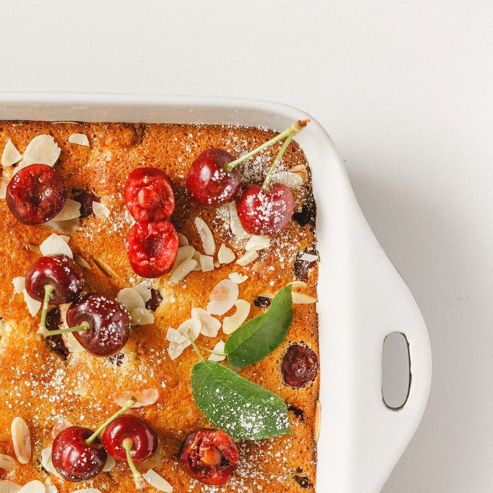

Čerešňová bublanina — Normy Jedál
🍒Bubla - bubla - bublanina 🍒. .
Trošku som updatla babkin recept a celkom sa vydarila, tak Vám ju sem dávam 😉. Ak budete robiť na celý plech, tak dajte 6vajec a zdvojnásobte ostatné ingrediencie.
.
Recept na čerešňovú bublaninu:
Ingrediencie:
4ks vajcia
125g práškový cukor
175g múka
1/2 prášok do pečiva
1dcl kokosový olej
1dcl mlieko
1/2ČL vanilkový extrakt
1/2ČL citrónová kôra
600g vykôstkované čerešne (množstvo je na Vás)
Mandľové lupienky (voliteľné)
Biela čokoláda (voliteľné)
Postup:
Zvlášť v miske vymiešame sneh z bielkov. V druhej miske vymiešame žĺtka s cukrom, postupne zamiešavame ostatné ingrediencie. Nakoniec zľahka vmiešame sneh. Vylejeme na plech, na vrch dáme čerešne, mandle a kúsky čokolády. .
.
.
#sheetcake #cherrysheetcake #cherries #ceresne #bublanina #ceresnovabublanina #cherrycake #cake #kolac #peciem #bale #baking #dneskem #dezert #foodstagram #foodphotography #foodstyling #foodstylingandphotography #foodphotographer #instafood